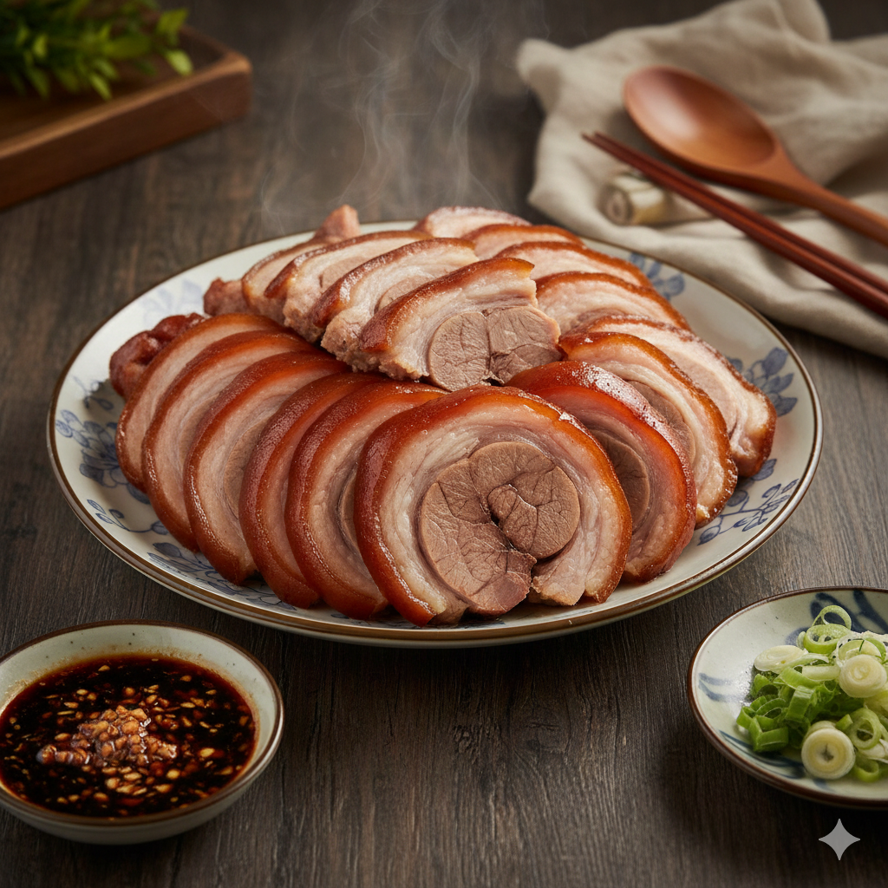

學號姓名：91034107 陳振瑋
🍖 屏東名產：萬巒豬腳

萬巒豬腳是屏東萬巒鄉最著名的客家料理。不同於一般滷豬腳的軟爛，萬巒豬腳講求的是「皮 Q 肉紮實」，口感極佳且不油膩。製作過程需經過嚴密的除毛、川燙與長達數小時的獨門滷汁慢火滷製，最完美的靈魂則是那碗濃郁的蒜蓉沾醬。
🛒 準備食材
- 主料：精選豬前蹄（筋較多，口感較Q）。
- 滷包秘方：八角、花椒、桂皮、甘草、草果。
- 調味料：優質醬油、冰糖、米酒、老薑、大蔥。
👨🍳 製作工法
- 初步處理：將豬腳徹底除毛、洗淨，放入滾水中加入薑片與米酒川燙去腥。
- 冰鎮收縮：川燙後立即浸入冰水或冷水中冷卻，這是讓豬腳皮質 Q 彈的關鍵步驟。
- 慢火滷製：將豬腳放入裝有秘製滷包、醬油與冰糖的鍋中，先大火煮滾後轉小火滷約 1.5 - 2 小時。
- 浸泡入味：滷至色澤琥珀紅亮後關火，讓豬腳在滷汁中浸泡，吸飽香氣。
✨ 靈魂蒜蓉醬：
萬巒豬腳好吃的秘訣在於沾醬！將大量新鮮蒜末、特製醬油膏、砂糖與少許香油混合。蒜泥的辛辣正好中和豬腳的脂香，讓味道層次昇華。